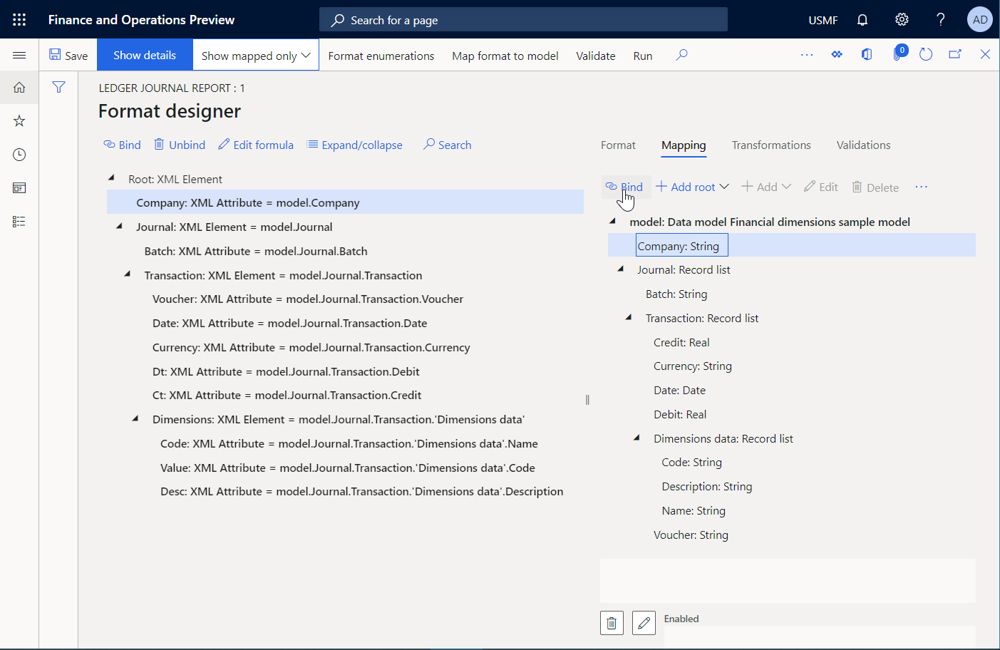

ER – Verwendung von Finanzdimensionen als Datenquelle (Teil 3: Berichtsentwurf)
[!include[banner](../../includes/banner.md)]In den folgenden Schritten wird erläutert, wie ein Benutzer mit der Rolle Systemadministrator oder Entwickler für elektronische Berichterstellung ein ER-Modell zur Nutzung von Finanzdimensionen als Datenquelle für ER-Berichte nutzen kann. Diese Schritte können in jedem Unternehmen ausgeführt werden.
Um diese Schritte auszuführen, müssen Sie erst die Schritte im Verfahren „ER - Finanzdimensionen als Datenquelle nutzen (Teil 2: Modellzuordnung)“ ausführen.
Entwerfen eines Berichts zur Darstellung von Finanzdimensionen
- Wechseln Sie zu Organisationsverwaltung > Elektronische Berichterstellung > Konfigurationen.
- Wählen Sie in der Struktur "Finanzdimensions-Beispielmodell".
- Klicken Sie auf "Konfiguration erstellen", um das Dropdown-Dialogfeld zu öffnen.
- Geben Sie im Feld "Neu" "Format basierend auf Finandimensions-Beispieldatenmodell" ein.
- Verwenden Sie das Modell, die im Voraus als Datenquelle für den neuen Bericht erstellt wurde.
- Geben Sie im Feld "Name" "Sachkontoerfassungbericht" ein.
- Wählen Sie im Feld "Datenmodelldefinition" "Erfassung" aus.
- Klicken Sie auf Konfiguration erstellen.
- Klicken Sie auf Designer.
- Klicken Sie auf "Stamm hinzufügen", um das Ablagedialogfeld zu öffnen.
- Wählen Sie in der Struktur den Knoten 'XML\Element'.
- Geben Sie im Feld Name "Root" ein.
- Klicken Sie auf "OK".
- Klicken Sie zum Öffnen des Ablage-Dialogfelds auf "Hinzufügen".
- Wählen Sie in der Struktur 'XML\Attribute' aus.
- Geben Sie im Feld Name "Firma" ein.
- Klicken Sie auf "OK".
- Klicken Sie zum Öffnen des Ablage-Dialogfelds auf "Hinzufügen".
- Wählen Sie in der Struktur den Knoten 'XML\Element'.
- Geben Sie im Feld "Name" "Journal" ein.
- Klicken Sie auf "OK".
- Wählen Sie in der Strukturdarstellung "Root: XML Element\Journal: XML Element".
- Klicken Sie zum Öffnen des Ablage-Dialogfelds auf "Hinzufügen".
- Wählen Sie in der Struktur 'XML\Attribute' aus.
- Geben Sie im Feld "Name" "Charge" ein.
- Klicken Sie auf "OK".
- Klicken Sie zum Öffnen des Ablage-Dialogfelds auf "Hinzufügen".
- Wählen Sie in der Struktur den Knoten 'XML\Element'.
- Geben Sie im Feld "Name" "Buchung" ein.
- Klicken Sie auf "OK".
- Wählen Sie in der Strukturdarstellung 'Root: XML Element\Transaction: XML Element'.
- Klicken Sie zum Öffnen des Ablage-Dialogfelds auf "Hinzufügen".
- Wählen Sie in der Struktur 'XML\Attribute' aus.
- Geben Sie im Feld "Name" "Beleg" ein.
- Klicken Sie auf "OK".
- Klicken Sie auf "Attribut hinzufügen".
- Geben Sie im Feld "Name" "Datum" ein.
- Klicken Sie auf "OK".
- Klicken Sie auf "Attribut hinzufügen".
- Geben Sie im Feld "Name" 'Währung' ein.
- Klicken Sie auf "OK".
- Klicken Sie auf "Attribut hinzufügen".
- Geben Sie im Feld Name "Dt" ein.
- Klicken Sie auf "OK".
- Klicken Sie auf "Attribut hinzufügen".
- Geben Sie im Feld Name "Ct" ein.
- Klicken Sie auf "OK".
- Klicken Sie zum Öffnen des Ablage-Dialogfelds auf "Hinzufügen".
- Wählen Sie in der Struktur den Knoten 'XML\Element'.
- Geben Sie im Feld "Name" "Dimensionen" ein.
- Klicken Sie auf "OK".
- Wählen Sie in der Strukturdarstellung 'Root: XML Element\Transaction: XML Element\Dimensions: XML Element'.
- Klicken Sie zum Öffnen des Ablage-Dialogfelds auf "Hinzufügen".
- Wählen Sie in der Struktur 'XML\Attribute' aus.
- Geben Sie im Feld "Name" "Code" ein.
- Klicken Sie auf "OK".
- Klicken Sie auf "Attribut hinzufügen".
- Geben Sie im Feld 'Name' "Wert" ein.
- Klicken Sie auf "OK".
- Klicken Sie auf "Attribut hinzufügen".
- Geben Sie im Feld Name "Desc" ein.
- Klicken Sie auf "OK".

Zuweisen von Berichtselementen zu Datenquellen
- Klicken Sie auf die Registerkarte Zuordnung.
- In der Struktur erweitern Sie "Modell: Datenmodell-Finanzdimensionsbeispielmodell".
- In der Struktur erweitern Sie 'Modell: Datenmodell Finanzdimensionen-Beispielmodell\Erfassung: Datensatzliste'.
- In der Struktur erweitern Sie 'Modell: Datenmodell Finanzdimensionen-Beispielmodell\Transaktion: Datensatzliste'.
- In der Struktur erweitern Sie 'Modell: Datenmodell Finanzdimensionen-Beispielmodell\Transaktion: Datensatzliste\Dimensionsdaten: Datensatzliste'.
- Wählen Sie in der Strukturdarstellung 'Root: XML Element\Transaction: XML Element\Dimensions: XML Element\Desc: XML-Attribut'.
- In der Struktur wählen Sie 'Modell: Datenmodell Finanzdimensionen-Beispielmodell\Transaktion: Datensatzliste\Dimensionsdaten: Datensatzliste\Beschreibung: String'.
- Klicken Sie auf Binden.
- Wählen Sie in der Strukturdarstellung 'Root: XML Element\Transaction: XML Element\Dimensions: XML Element\Wert: XML-Attribut'.
- In der Struktur wählen Sie 'Modell: Datenmodell Finanzdimensionen-Beispielmodell\Transaktion: Datensatzliste\Dimensionsdaten: Datensatzliste\Code: String'.
- Klicken Sie auf Binden.
- Wählen Sie in der Strukturdarstellung 'Root: XML Element\Transaction: XML Element\Dimensions: XML Element\Code: XML-Attribut'.
- In der Struktur wählen Sie 'Modell: Datenmodell Finanzdimensionen-Beispielmodell\Transaktion: Datensatzliste\Dimensionsdaten: Datensatzliste\Name: String'.
- Klicken Sie auf Binden.
- In der Struktur wählen Sie 'Modell: Datenmodell Finanzdimensionen-Beispielmodell\Transaktion: Datensatzliste\Dimensionsdaten: Datensatzliste'.
- Wählen Sie in der Strukturdarstellung 'Root: XML Element\Transaction: XML Element\Dimensions: XML Element'.
- Klicken Sie auf Binden.
- Wählen Sie in der Strukturdarstellung 'Root: XML Element\Transaction: XML Element\Ct: XML-Attribut'.
- In der Struktur wählen Sie 'Modell: Datenmodell Finanzdimensionen-Beispielmodell\Transaktion: Datensatzliste\Haben: Gleitkommazahl'.
- Klicken Sie auf Binden.
- Wählen Sie in der Strukturdarstellung 'Root: XML Element\Transaction: XML Element\Dt: XML-Attribut'.
- In der Struktur wählen Sie 'Modell: Datenmodell Finanzdimensionen-Beispielmodell\Transaktion: Datensatzliste\Soll: Gleitkommazahl'.
- Klicken Sie auf Binden.
- Wählen Sie in der Strukturdarstellung 'Root: XML Element\Transaction: XML Element\Währung: XML-Attribut'.
- In der Struktur wählen Sie 'Modell: Datenmodell Finanzdimensionen-Beispielmodell\Transaktion: Datensatzliste\Währung: String'.
- Klicken Sie auf Binden.
- Wählen Sie in der Strukturdarstellung 'Root: XML Element\Transaction: XML Element\Datum: XML-Attribut'.
- In der Struktur wählen Sie 'Modell: Datenmodell Finanzdimensionen-Beispielmodell\Transaktion: Datensatzliste\Datum: Datum'.
- Klicken Sie auf Binden.
- Wählen Sie in der Strukturdarstellung 'Root: XML Element\Transaction: XML Element\Beleg: XML-Attribut'.
- In der Struktur wählen Sie 'Modell: Datenmodell Finanzdimensionen-Beispielmodell\Transaktion: Datensatzliste\Beleg: String'.
- Klicken Sie auf Binden.
- Wählen Sie in der Strukturdarstellung 'Root: XML Element\Transaction: XML Element'.
- In der Struktur wählen Sie 'Modell: Datenmodell Finanzdimensionen-Beispielmodell\Transaktion: Datensatzliste'.
- Klicken Sie auf Binden.
- Wählen Sie in der Strukturdarstellung 'Root: XML Element\Charge: XML Attribut'.
- In der Struktur wählen Sie 'Modell: Datenmodell Finanzdimensionen-Beispielmodell\Erfassung: Datensatzliste\Charge: String'.
- Klicken Sie auf Binden.
- Wählen Sie in der Strukturdarstellung "Root: XML Element\Journal: XML Element".
- In der Struktur wählen Sie 'Modell: Datenmodell Finanzdimensionen-Beispielmodell\Erfassung: Datensatzliste'.
- Klicken Sie auf Binden.
- Wählen Sie in der Strukturdarstellung "Root: XML Element\Unternehmen: XML-Attribut".
- In der Struktur wählen Sie 'Modell: Datenmodell Finanzdimensionen-Beispielmodell\Unternehmen: String'.
- Klicken Sie auf Binden.
- Klicken Sie auf Speichern.
- Schließen Sie die Seite. 